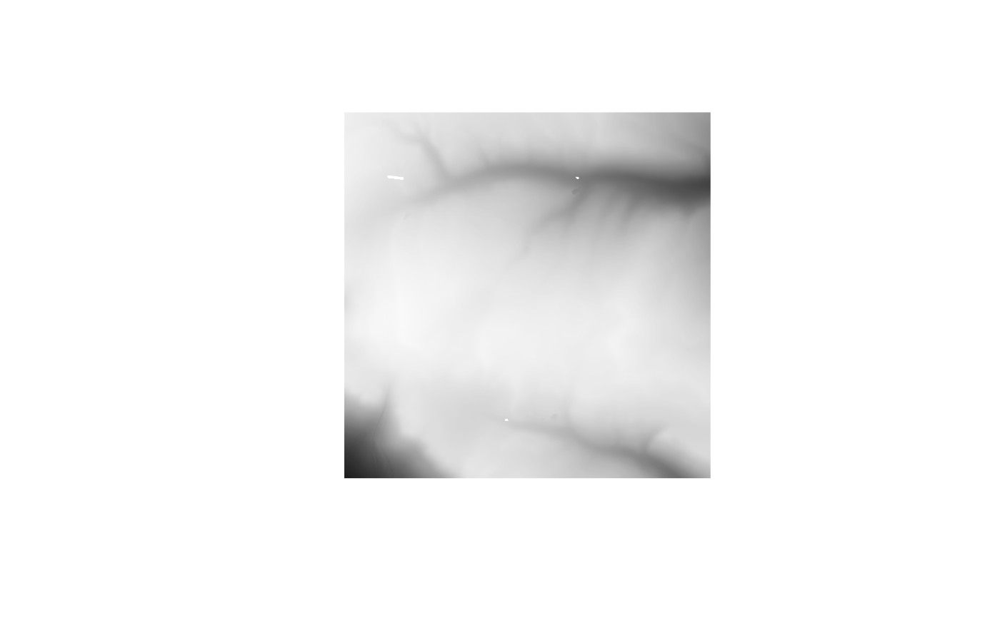
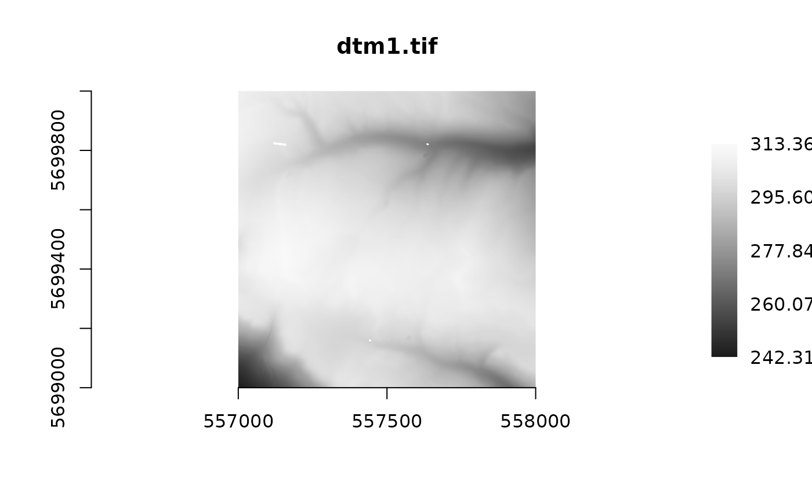
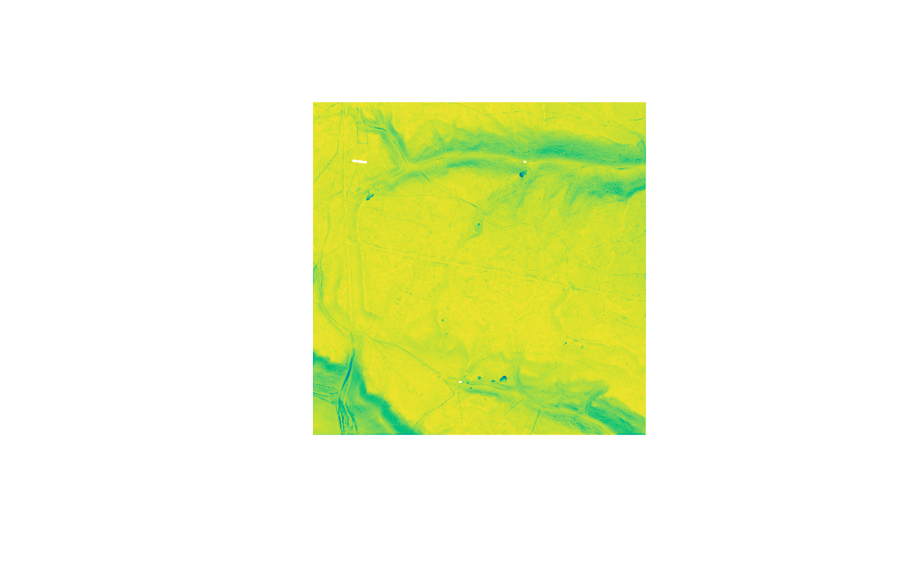
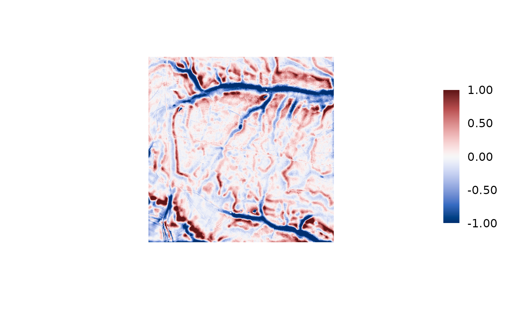
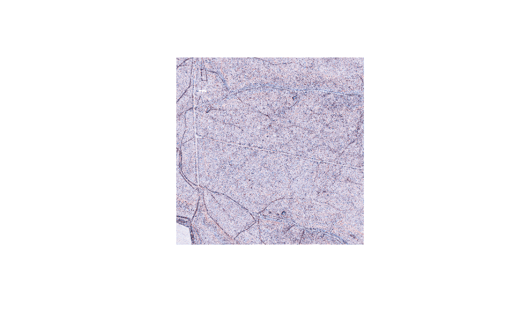
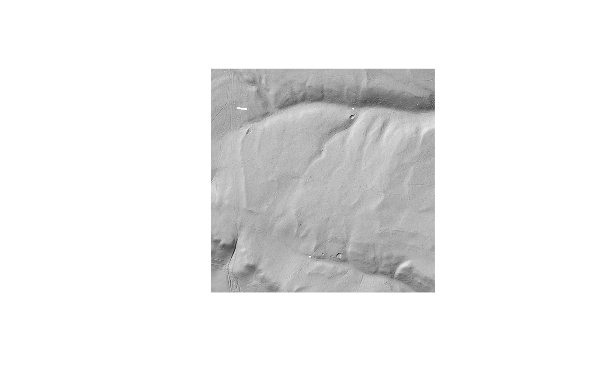

Renders a single-band raster - typically output from rvt_svf(),
rvt_openness() or rvt_vat() - as an image. A thin wrapper around
gdalraster::plot_raster(), which does the actual work: correct
orientation, a colour scale stretched to the data's own range, and NoData
handling. This just adds a downsampled read (so a huge raster still
renders fast) and a path-in, path-out interface for piping.
Usage
rvt_plot(
path,
col = "Grays",
max_dim = 1000,
legend = FALSE,
axes = FALSE,
band = NULL,
...
)Arguments
- path
path to a single-band raster, or an
rvt_stackfromrvt_blend(), which is rendered to a temporary raster first- col
a palette name such as
"Grays"(default),"Viridis"or"Blue-Red 3", or a vector of colours. Names ignore case, spaces and hyphens, and a unique start is enough.rvt_palettes()shows them all.- max_dim
longest side, in pixels, to render at (default 1000); downsampling happens on read via GDAL, not by loading the full raster first
- legend
show a colour scale (default
FALSE, just the image)- axes
show axes with coordinates (default
FALSE)- band
which band to draw, for multi-band results such as
rvt_mstp(); or three band numbers to draw as red, green and blue. Defaults to band 1, except for a 3-band raster, which is drawn as RGB (which is whatrvt_mstp()wants).- ...
passed on to
gdalraster::plot_raster()- see Controlling the stretch and Other display options below
Controlling the stretch
By default the colours are stretched across the data's full range, which is
often the wrong choice: a handful of extreme cells then compress everything
interesting into the middle of the palette. Two arguments override it,
both passed through to gdalraster::plot_raster():
# fixed values - anything outside is clipped to the end colours
p |> rvt_plot(minmax_def = c(-0.05, 0.05))
# or cut percentiles, when you don't know the range in advance
p |> rvt_plot(minmax_pct_cut = c(2, 98))The difference is easy to underestimate. Minimal curvature on the bundled sample tile spans -1.41 to 0.87, but its 2nd-98th percentile range is only -0.20 to 0.12 - so the default stretch spends most of the palette on outliers.
For any signed result - curvature, rvt_log(), rvt_slrm(),
rvt_msrm(), rvt_dev() - keep the range symmetric about zero and use
a diverging palette, or zero will not land on the palette's neutral centre
and convex will stop reading as the opposite of concave:
Turning the legend on while choosing a stretch is worth the space - it is
the only way to see what the range you picked actually was. Note the legend
is drawn for single-band images only; an RGB composite has no one scale to
show.
Which numbers to use is metric-dependent, and each metric's own help page
carries the stretches recommended in the literature - see the
Recommended settings section of rvt_svf(), rvt_openness() and the
rest.
Other display options
Anything gdalraster::plot_raster() accepts works here. The ones worth
knowing:
main = "..."for a title;axes = TRUEadds coordinate axes.coltakes a palette name or colours. Use a diverging palette for signed data, a qualitative one forrvt_geomorphons()- its values are class codes, so a ramp implies an order that isn't there:rvt_plot(g, "Dark 3").rvt_palettes()draws every option.band = ipicks one band out of a multi-band result; a 3-band one such asrvt_mstp()is drawn as RGB automatically.max_dimcaps the rendered size. Downsampling happens during the read, so previewing a huge raster is cheap - and cheaper still on the Cloud-Optimized GeoTIFFs this package writes, which carry overviews.
One caveat when arranging several plots side by side: legend = TRUE
splits the device with graphics::layout(), which overrides any
par(mfrow = ...) you have set, so every panel after the first is lost.
Leave the legend off for multi-panel figures, or draw each panel to its own
device.
Examples
dem <- system.file("extdata", "dtm1.tif", package = "rvtr")
dem |> rvt_plot()

dem |> rvt_plot(legend = TRUE, axes = TRUE, main = basename(dem))

# any palette by name; rvt_palettes() shows them all
dem |> rvt_svf() |> rvt_plot("Viridis")

# signed data: diverging palette, symmetric stretch
dem |> rvt_slrm() |> rvt_plot("Blue-Red 3", minmax_def = c(-1, 1), legend = TRUE)

# percentile stretch when the range isn't known
dem |> rvt_curvature() |> rvt_plot("Blue-Red 3", minmax_pct_cut = c(2, 98))

# a blend stack draws directly, with no rvt_render() call
dem |> rvt_hillshade() |>
rvt_blend(rvt_svf(dem), "multiply", opacity = 0.25) |>
rvt_plot()
